福井市内越前海岸エリアには
旅好きもワクワクする、個性的なお店や
アクティビティが盛りだくさん。
特典がいっぱいの
越前海岸トラベルパスポートを持って
旅に出かけよう！
宿泊プランのお申し込み
パスポートは越前海岸トラベルパスポート付き宿泊プランで
福井市内の宿泊施設にお泊まりの方にお渡ししています。
パスポート有効期間
2023年4月1日〜11月12日
ご予約が必要な特典もありますので、
ご利用前にご確認ください。
- 当パスポート１冊につき、おひとり様分の特典が受けられます。グループの方はご人数分の当パスポートをご提示ください。添い寝の幼児はご利用対象外です。
- 事前にご予約いただく場合は、「越前海岸トラベルパスポート」利用の旨お伝えください。又、当日必ず当パスポート冊子をご持参ください。
- 当パスポートをご持参にならなかった場合には特典を受けることができません。
- 特典のご利用がない場合でも、返金・払い戻しはありません。
- 掲載の情報は2023年3月現在の情報です。変更になる場合がありますのでご了承ください。
パスポートに掲載
スタンプを集めて完成させよう！
福井市内 越前海岸エリアの
15の施設をめぐって、スタンプを集めよう！
越前海岸トラベルパスポートは
福井市内 越前海岸エリアにある15か所の施設で
ご利用いただけます。
-
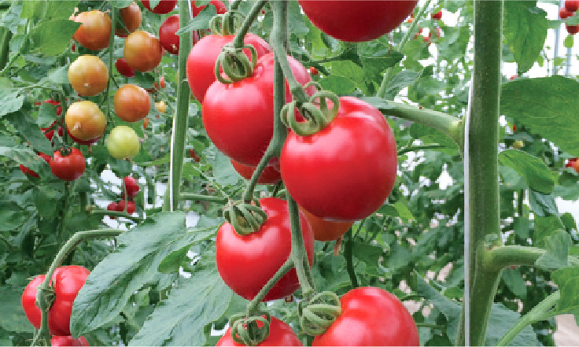 ワトム農園
ランチご予約の方に“まほうのトマト”等、野菜が栽培されている農場見学
お食事（ランチ）後にご案内・お土産付き・要予約2023年5月にワトム農園敷地内にオープンのフレンチレストラン“Les Queues（レ クゥ）”。ミシュランガイド2021北陸版で1つ星を獲得した阪下シェフが新たに選んだ新天地は、まさかの農園でした！野菜はもちろんワトム農園で栽培されたものを中心に“Farm to Table”で、その他の食材や材料も環境へ配慮した“サスティナブル”で統一。阪下シェフの新たな挑戦です。本格的なフランス式石窯の薪火が見える調理場や、大きな窓から見えるワトム農園の栽培現場やハーブガーデンは、まさに癒しそのものです。
【営業時間】ランチ 12:00～
※11時30分までにお越しください
【定休日】木曜日
〒910-3131 福井市白方町2-22
お問い合わせ 090-8099-3081（品川）
https://watom.net/ -
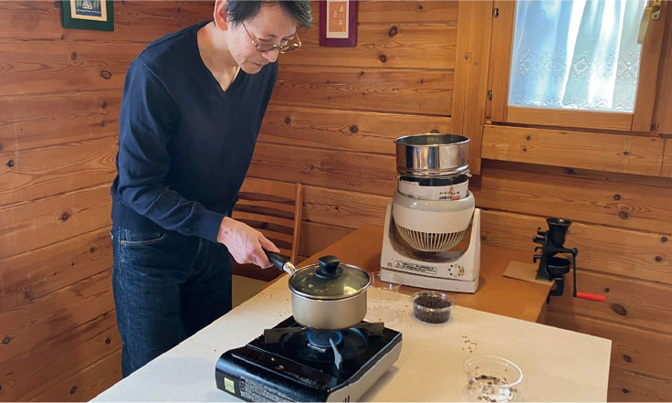 佐介蕎麦
珈琲焙煎体験をお申込みの方に
珈琲豆100グラムのお土産プレゼント！お昼はお蕎麦のお店として営業している、原風景の中のログハウス（角ログ）で珈琲豆の焙煎体験をしていただけます。
珈琲焙煎体験料金：1グループ 1,500円
1日2グループ限定
※1グループ3名まで。前日の10:00〜14:00でご予約ください。
※天候により室内での蕎麦茶焙煎となる場合があります。【営業時間】お食事 11:00〜14:00 (LO13:30)
※麺がなくなる場合もありますのでご了承ください。
焙煎体験 14:15〜15:15
【定休日】土・日・祝（不定休）
※土日祝で営業できる場合もあります。事前にご確認ください。
〒910-3147 福井市木下町6-1-15
お問い合わせ 0776-83-1517
https://sasuke-soba.jimdosite.com/ -
福井洋傘
税込33,000円以上お買い上げのお客様に
傘生地で作成したエコバッグをプレゼント福井県の「繊維」・「メガネフレーム」・「漆」の地場産業を基にした福井県ならでは傘をご案内いたします。蛇の目傘を生地張りでリモデルした「蛇の目洋傘」や濡れない生地の「ヌレンザ」などが代表商品です。また、骨数・骨の長さ・手元などをご指定いただくオーダーメイドにも対応しております。また、傘の製造現場の見学も承っております。
※工房の見学のみでもOKです。
※工房見学ご希望の場合は、3日前までにお電話でお問い合わせください。【営業時間】9:00～18:00
【定休日】土・日・祝
〒910-3134 福井市浜別所町4-4-2
お問い合わせ 0776-85-1114
https://www.fukuiyougasa.com/ -
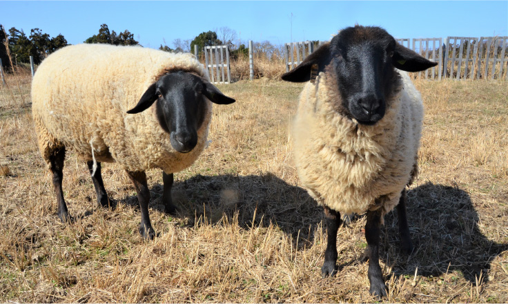 たかすオハナ牧場
「たかすオハナ牧場」ツアー（解説付）
土日祝日の10:30〜/14:00〜(各30分)たかすオハナ牧場は越前海岸沿岸から山側に1キロほど入った小さな村の中にあります。ヤギとヒツジが一年中放牧されのんびり草を食べている風景に癒されることでしょう。餌やり体験が楽しめます。またヒツジは福井県初の畜産牧場として美味しいラム肉生産に取り組んでいます。
※ツアーをご希望の方は必ずお電話で前日19時までにご予約ください。
※牧場主不在の日などツアー実施できない日もあります。ご了承ください。【営業時間（カフェ）】11:00～16:00
【定休日】木曜日
〒910-3373 福井市西畑町2-9
お問い合わせ 090-2123-3851
https://takasu-ohana.com/ -
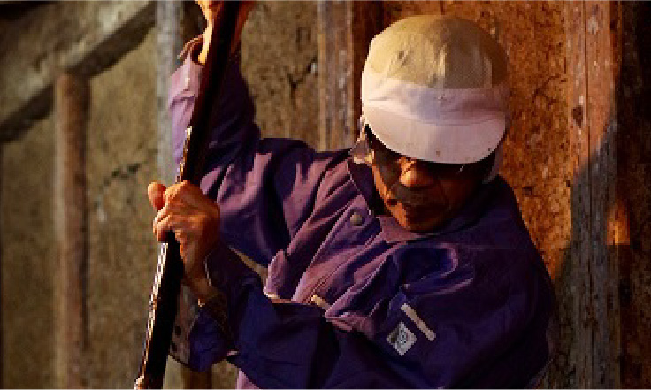 岩尾醤油醸造元
しょうゆの豆知識と普段見れない蔵の中の見学（要予約）または商品のお買い上げの3%引きさせて頂きます
岩尾醤油醸造元は、明治7年創業以来使用している杉桶での天然醸造醤油を作っています。醤油蔵は普段見れない場所で圧巻です。 見学の場合は醤油についての豆知識とテイスティングが出来ます。 他に有料で醤油搾り体験なども出来ます。 (前日12時までの予約要、パスポート特典対象外)
【営業時間】9:00～18:00
【定休日】月曜日（祝日の場合は翌火曜日）
※営業時間内でも配達等で留守にする時があります
〒910-3383 福井市糸崎町1-3
お問い合わせ 0776-86-1720
https://www.iwao-shoyu.com/ -
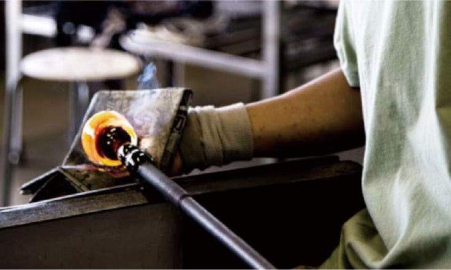 WATARIGLASS studio
吹場の中での制作見学（解説付）（約10分〜30分）
前日17時までにお電話でご予約ください（木～月曜日のみ実施）越前海岸にあるガラス工房です。宙吹きガラスという、型を使わない吹きガラスの技法で、制作をしています。工房に併設されたショップからは制作の様子が見えます。また、制作体験も受け付けています。
【営業時間】9:00～17:00
【定休日】水・第2、第4日曜日
※夏休み期間は日曜日も営業します
〒910-3402 福井市鮎川町17-14
お問い合わせ 0776-88-2025
https://watariglass.com/ -
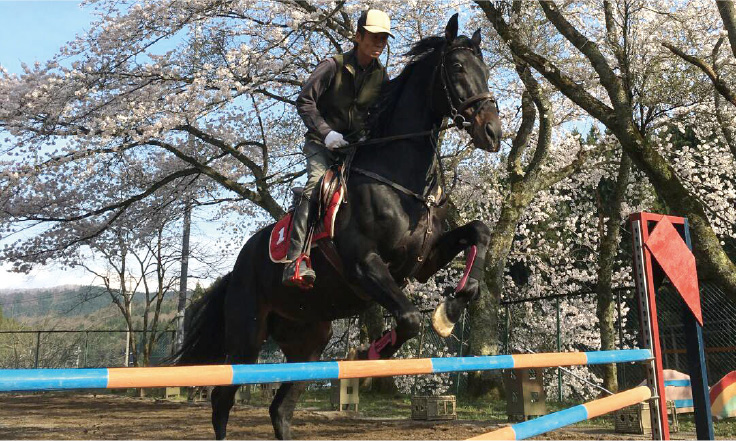 ほんごう馬の里
ビジター乗馬体験をご利用の方に
無料で馬のえさやり体験をプラス！（要予約）福井駅から車で20分ほどの里山に囲まれた自然豊かな環境に立地。廃校になった小学校の跡地を再利用しており、春には敷地内に当時から残る20本の巨木桜の壮麗な景色を見ることができます。引退した競走馬を中心に15頭の馬がのんびり暮らしており、熱心な乗馬愛好家が集う癒しスポットです。
ビジター乗馬体験料金（30分）：5,500円【営業時間】9:00～18:00
※体験予約は10時、11時、13時、14時、15時、16時
【定休日】火曜日
※正会員の入会方法はHPを参照。また電話での問合せもお気軽に。
〒910-3261 福井県福井市西荒井町47-17
お問い合わせ 0776-83-0405
http://www4.fctv.ne.jp/~uma/ -
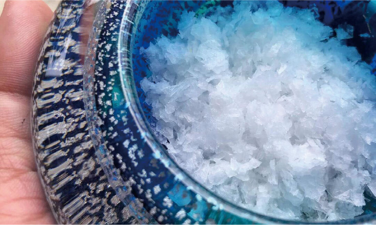 志野製塩所
お塩と越前海岸の話ツアー（解説付）
土日祝日の10:30～/15時～（各30分・要予約）越前海岸でも指折りの絶景ポイントに立つ製塩所では豊かな海水を薪火で丁寧に焚いて結晶化したお塩を作っています。併設するヒトモノコトを伝え繋がる商店「しの屋」では新鮮な朝どりの無農薬野菜やお米、地域の資源を餌に混ぜて育てた鶏の卵など越前海岸の恵みとつながりの中にある大好きな商品を取り揃えております。
※ツアーは必ずお電話で前日（19時までに）ご予約ください。
※製塩所長不在の日などツアー実施できない日もあります。ご了承ください。【営業時間】土・日・祝のみ営業 11:00～17:00
〒910-3402 福井市鮎川町133-1-1
お問い合わせ 070-3630-1920
https://anoh.jp/ -
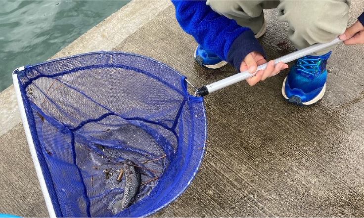 くにみクラゲ公民館
気になる魚のミニガイドサービス
くにみクラゲ公民館は、福井市国見地区で長年活用されてきた「国見公民館」をリノベーションしてできた、小さな水族館です。クラゲをはじめ、越前海岸や若狭湾、日本海でみることができる生き物たちを展示しています。
【営業時間】10:00～17:00
【定休日】火曜日
※入館料は中学生以上500円、小学生300円
未就学児無料 団体、障害者割引き有り
（金額は全て税込）
〒910-3402 福井市鮎川町195-7
お問い合わせ 090-6536-8346（田中）
https://www.instagram.com/kunimikurage/ -
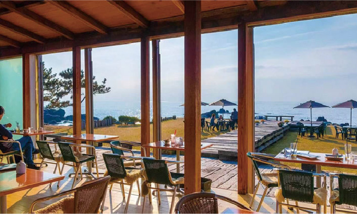 cafe MARE
お食事をされた方がパスポートをお持ちの場合
パスポート１冊につき、ミニソフト１個サービス65日、日々移り行く自然の中で、お客様自身が何かを感じ、それぞれのストーリーを楽しんで頂きたいと願っております。日本一のロケーション、日本一のスタッフがお待ちしております。
【営業時間】10:00～日没
【定休日】年中無休
〒910-3404 福井市大丹生町70-3
お問い合わせ 0776-88-2323
https://cafemare.jp/ -
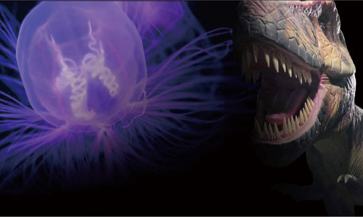 古代生物ミュージアム幻想クラゲ館
ミュージアムガイドとクラゲ餌やり体験
3名以上で要予約 ステッカープレゼントさまざまな種類のクラゲを展示しています。また、珍しいモササウルスの化石、ラブカの剥製など古代生物の展示もお楽しみください。
※パスポート特典のご予約はお電話またはメールにて。
※営業日以外のご予約もお問合せください。【営業時間（ミュージアム）】
土・日・祝のみ営業 12:00~17:00
※ミュージアム入館料は3歳以上250円（税込）
〒910-3402 福井市鮎川町167-3-6
お問い合わせ 090-9446-8778（小島）
atolla.fukui@gmail.com
http://www.atolla.sakura.ne.jp/ -
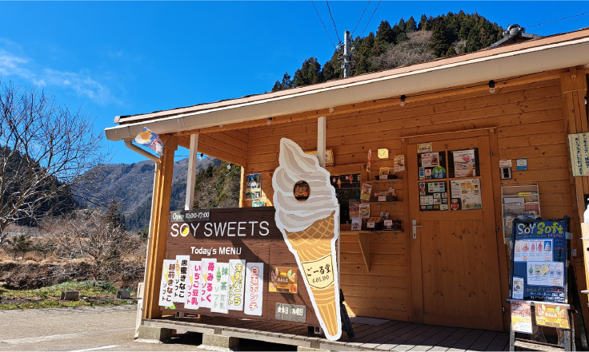 ごーる堂
ソフトクリームご購入の方に
5種類のトッピングサービス&写真撮影地元産の大豆を使ったソフトクリームの直営店。ごーる堂のソフトクリームを、トッピングで、見た目も・味も・自分好みの、世界で一つだけのソフトクリームに変身させていただきます。LINEの友だち追加でショップカード登録できます！ポイントをためるとうれしい特典がありますのでぜひご利用ください。四季折々の大自然をながめながら貴方だけのオリジナルのソフトクリームを是非ご賞味ください。
【営業時間】10:00～17:00
【定休日】木曜日
〒910-3517 福井市畠中町28-6
お問い合わせ 0776-97-2125
http://www.gojiru.jp/ -
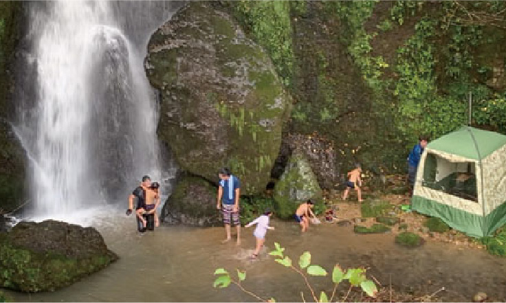 こしのくに里山再生の会
（要事前予約）通常2時間のところ
薪割り&テントサウナ体験1時間延長専門家のレクチャーの元、「殿下の森」から伐採してきた木材を、斧やくさびを使って薪割りをします。薪を薪ストーブに投入し、テントがサウナ状態になったら中へ！熱源が薪なので、じんわりと体の芯まで温まります。火照った体で外に出たら、そのまま天然の水風呂へ直行！解放感と爽快感で心も体もスッキリ。
【営業時間】土・日のみ 13:30～15:30
※事前にご予約ください。
〒910-3514 福井市水谷町39-1
お問い合わせ 080-3394-8222（松平）
https://koshinokuni.net/ -
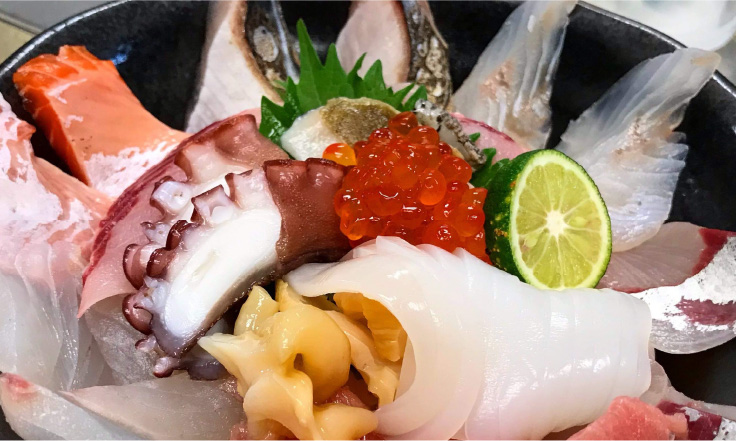 魚屋の喰い処 まつ田
パスポートをお持ちの方で、お食事をされた方
地どれの海藻小鉢を1品サービス地元定置網で捕れるピチピチの鮮度の魚にこだわりにこだわっております。
刻々と移り行く旬を見極め「一瞬（旬）」をお客様に提供できるよう日々精進いたしております。【営業時間】11:00～16:00 (LO15:00)
【定休日】木曜日（11月～3月は無休）
〒910-3553 福井市蒲生町16-7-1
お問い合わせ 0776-89-2740
https://etizenkani.jp/ -
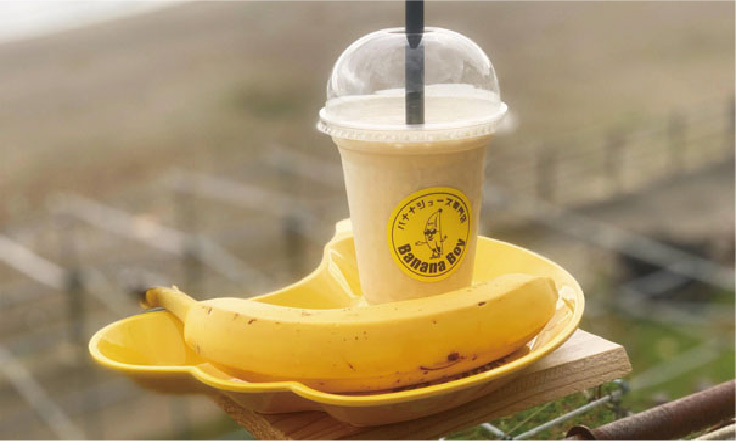 バナナジュース専門店
BananaBoy越前海岸本店バナナジュースを注文された方に
トッピングをサービス福井県初のバナナジュース専門店！
砂糖不使用でヘルシーな無添加濃厚バナナジュースを販売しております。毎日罪悪感なく飲めるバナナジュースをモットーに自然の甘みを追求しております。
1日の活力にこの一杯で栄養補給を。咀嚼力の弱い子供からお年寄りまで自然本来の甘みを楽しみつつ栄養補給をしていただけます。【営業時間】平日10:00～16:00、土日〜17:00
【定休日】木曜日
〒910-3553 福井市蒲生町16-7-1
魚屋の喰い処まつ田駐車場内
お問い合わせ 0776-76-6407
https://bananaboy.business.site/